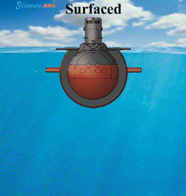
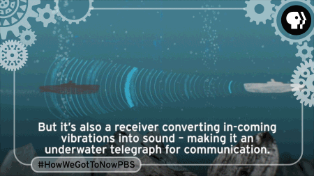
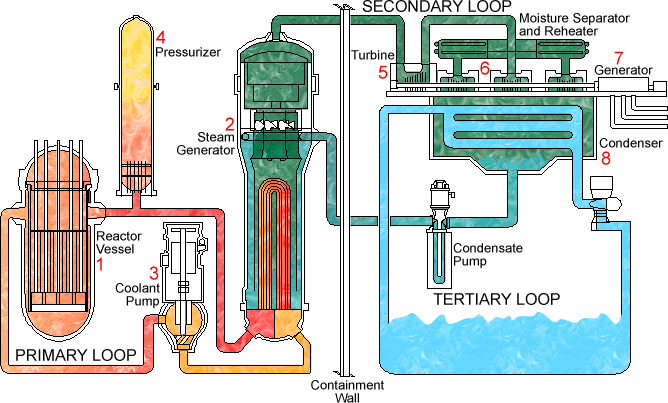
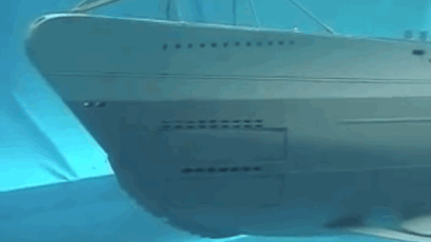

Fact One: For a submarine to submerge, a submarine must make use of its ballast tanks. A ballast tank is a container which can be filled with water, this tank sits between the submarines inner and outer walls. The ballast tanks are flooded changing the state of buoyancy, increasing the amount of water in the ballast tanks causes the submarine to submerge. Releasing the tanks causes the submarine to surface. Hover over icon one to see how this works.
Fact Two: Modern day subarmines make use of sea-to-air missles to disable land, sea, and air targets. Throughout the 1960's and 1970's the U.S government put forward a grant to improve the navigation of these weapon systems. In the 1980's sophisticated targeting systems were produced allowing for terrain navigation as well as static-geometric rotation. Sensors detect the materials of an enemy vessel, hover over icon two to see how this works.
Fact Three: Interwoven communication systems give a submarine the ability to navigate both submerged and surfaced. Sonar, the most well known and common form of navigation/detection is an integral part of any communication system. Sonar works ping sending a sound vibration off, if that vibration hits an object then it is returned back to the submarine and is displayed on the monitor. Hover over icon three to see how this works.
Fact Four: Nuclear submarines are power and propelled by power of nuclear reactors. In short, a reactor heats water, this steam is then applied to turn the turbines, once used the water is then cooled and re-used again. Nuclear reactors are able to power submarines submerged for the whole time on duty without ever having to surface, and rarely have to be replaced for the submarines lifetime. Hover over icon four to see how this works.
Fact Five: Torpedoes have been part of a naval vessels aresenal since the late 1860's, however, much of their resemblance then is completely different to now. Submarines today make use of similar technologies used by the sea-air-missles, where the navigation of a torpedo can be controlled remotely and staticly change direction on the spot be draw by material composition signals. Hover over icon five to see how this works.